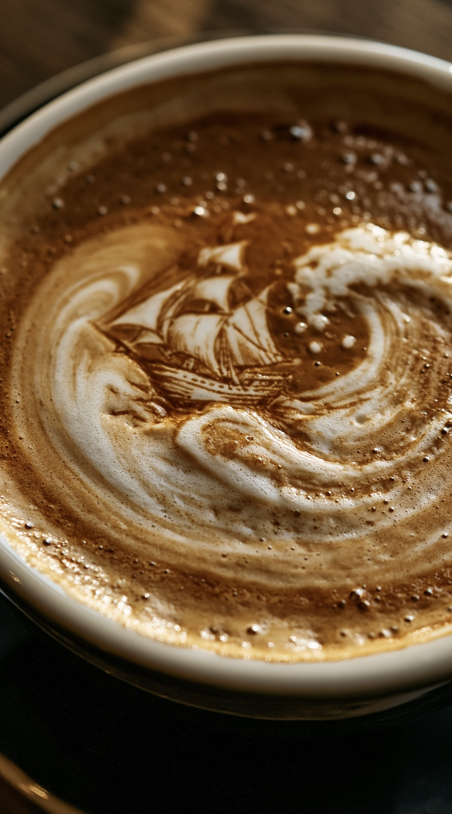

Our story
Harbor & Pine started in a garage with one small roaster and a lot of burnt beans. Eleven years on we still taste every batch before it leaves.
Small batch roasters
We roast on Mondays and ship on Tuesdays, so your bag is never more than a few days old when it reaches you.
Free shipping on orders over $30.
Order beans
Chocolate, hazelnut, a soft finish. Our everyday roast.
$15
Bright and fruity, with a little orange peel.
$20
Dark, smoky and low in acid. Made for milk.
$19
Harbor & Pine started in a garage with one small roaster and a lot of burnt beans. Eleven years on we still taste every batch before it leaves.
12 Wharf Street. Open Tuesday to Saturday, 8 to 3.